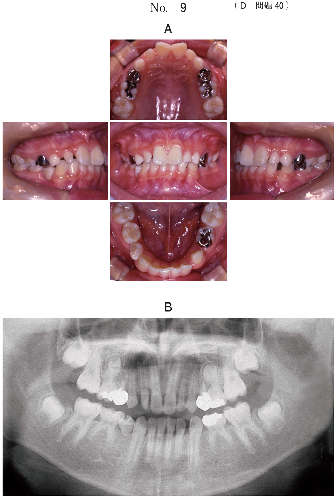

鼻咽腔閉鎖機能・構音機能
鼻咽腔閉鎖機能とは
嚥下や発音時に軟口蓋を挙上し、咽頭後壁に接触して鼻咽腔を閉鎖する機能。主に口蓋帆挙筋が関与する。この機能が障害されると鼻咽腔閉鎖不全となる。
発生要因
- 口蓋裂（開鼻声に構音障害を伴うことが多い）
- 口蓋裂の閉鎖手術後（術後に残存する場合がある）
- 軟口蓋腫瘍切除術後
- 脳血管障害後軟口蓋麻痺
症状
- 開鼻声：破裂音、摩擦音、破擦音などが著しく不明瞭になる
- 構音障害
構音障害の分類
| 分類 | 原因 | 具体例 |
|---|---|---|
| 器質性構音障害 | 構音器官の形態異常 | 口唇裂、口蓋裂、舌切除後、無歯顎 |
| 運動性構音障害 | 神経・筋疾患による構音器官の運動障害 | 重症筋無力症、パーキンソン病、脳血管障害 |
| 機能性構音障害 | 器質的・運動的な異常がない | 発達過程での構音の誤学習 |
構音障害（異常構音）の種類
鼻咽腔閉鎖不全に関連する異常構音
鼻咽腔閉鎖不全があると、口腔内圧を高めることができず、破裂音・摩擦音・破擦音が鼻に抜けてしまう。
| 正常な構音 | 鼻咽腔閉鎖不全時 |
|---|---|
| 両唇破裂音 /p/（パ行）、/b/（バ行） | /ma/ と発音される → 声門破裂音 |
| 歯茎破裂音 /t/（タテト）、/d/（ダデド） | /na/ と発音される |
| 軟口蓋破裂音 /k/（カ行）、/g/（ガ行） | 咽（喉）頭破裂音となる |
| 歯茎摩擦音 /s/（サ行）、/ʃ/（シャ行） | 咽（喉）頭摩擦音となる |
| 歯茎破擦音 /ts/（ツ）、/dz/（ヅ）、/tʃ/（チッ） | 咽（喉）頭破擦音となる |
その他の異常構音
| 種類 | 特徴 | 例 |
|---|---|---|
| 口蓋化構音 | 舌背と硬口蓋後方で産生される音。口蓋形態異常により後方に移動 | 「タ」→「カ」、「サ」→「ヒャ」「シャ」 |
| 側音化構音 | 下顎や口唇が横にずれ、舌も側方に寄り、口の横から息が漏れる | 「シ」→「ヒ」、「チ」→「キ」 |
| 鼻咽腔構音 | 鼻咽腔を狭めたり破裂させたりして産生 | 「クン」「グン」と鼻を鳴らしているように聞こえる |
鼻咽腔閉鎖機能の検査
| 検査法 | 内容 |
|---|---|
| 聴覚的判断 | 単音節復唱検査 |
| 口腔内視診（直視法） | 「ア」発音時に軟口蓋の長さ（短小）、動き（不良）を観察 |
| 鼻息鏡 | 「アー」を3秒持続発声し、鼻漏出の程度を半円の曇りで判定 |
| ブローイング検査 | ストローをくわえ息を吹き込み、呼気の鼻漏出と呼気持続時間を判定 |
| 鼻咽腔内視鏡検査 | 軟口蓋と咽頭側壁の動きをみる |
| 側面頭部エックス線写真 | 鼻咽腔形態の評価 |
| 軟口蓋造影エックス線写真 | 造影剤を使用した側方頭部エックス線写真で軟口蓋と咽頭後壁の外形をみる |
| ダイナミックMRI | 鼻咽腔閉鎖パターンと口蓋帆挙筋（軟口蓋）の動きをみる |
| ナゾメータ検査 | 口腔からの音圧に対する鼻腔からの音響エネルギーの比を求める |
| 筋電図検査 | 口蓋帆挙筋の筋活動を定量化 |
| 呼気鼻漏出検査 | 鼻の前に鏡を当て、呼気の鼻漏出を視覚的に確認 |
- パラトグラムは口蓋と舌との接触エリアを記録する構音検査法
- 側音化構音などの評価は可能
- 鼻咽腔閉鎖不全は評価できない（軟口蓋よりも奥の部分は評価不能）
鼻咽腔閉鎖不全の治療
言語治療
- 言語管理は3歳から開始
- 言語聴覚士による定期的な言語評価
- ブローイングによる鼻咽腔閉鎖機能の賦活化、構音器官の機能訓練、構音治療
補綴的治療
| 装置 | 適応 | 特徴 |
|---|---|---|
| スピーチエイド | 軟口蓋の長さが足りない場合 | バルブを発音時に鼻咽腔部の空隙に設置し、口蓋咽頭括約筋群の運動量の不足を補填 |
| 軟口蓋挙上装置（PLP） | 軟口蓋の運動が乏しい場合 | 義歯後方に挙上子を延長し、軟口蓋を人為的に挙上させて鼻咽腔を狭くする |
| 軟口蓋栓塞子 | 手術などにより軟口蓋が欠損した場合 | 軟口蓋の部分を装置で塞ぐ |
| 舌接触補助床（PAP） | 手術や病気で舌の運動障害がある場合 | 口蓋部を厚くした装置。舌が上顎に接触しやすくなり、カ行やタ行が発音しやすくなる |
- 軟口蓋の長さが足りない → スピーチエイド
- 軟口蓋の運動が乏しい → PLP（軟口蓋挙上装置）
観血的治療
- 再口蓋形成術（口蓋弁後方移動術）：一次手術と同様な術式
- 咽頭弁形成術（咽頭弁移植術）：軟口蓋や咽頭の粘膜筋組織で鼻咽腔を狭小化。10歳以後に行うのが望ましい
過去問
鼻咽腔閉鎖機能の検査はどれか。2つ選べ。
b パラトグラフィ
c 鼻咽腔内視鏡検査
d ブローイング検査
e ティンパノグラフィ
【解説】鼻咽腔閉鎖機能の検査として、鼻咽腔内視鏡検査（c：軟口蓋と咽頭側壁の動きを観察）とブローイング検査（d：呼気の鼻漏出を判定）が正解。a（改訂水飲み検査）は嚥下機能の検査。b（パラトグラフィ）は口蓋と舌の接触エリアを記録する構音検査法であり、鼻咽腔閉鎖不全の評価はできない。e（ティンパノグラフィ）は中耳の検査。
口蓋裂患者の検査中の写真（別冊No.3)を別に示す。この検査はどれか。1つ選べ。

b 吸引力検査
c 耳管機能検査
d 呼気流量検査
e 呼気鼻漏出検査
【解説】写真では鼻の下に鏡を当てて呼気の鼻漏出を調べている。口蓋裂患者の鼻咽腔閉鎖機能を評価するための呼気鼻漏出検査（e）である。
装置の写真（別冊No.1）を別に示す。この使用目的はどれか。2つ選べ。

b 呼吸の補助
c 咀嚼障害の改善
d 発語明瞭度の改善
e 鼻咽腔閉鎖運動の賦活
【解説】写真はスピーチエイドの装置。スピーチエイドは鼻咽腔閉鎖不全に対して使用し、発語明瞭度の改善（d）と鼻咽腔閉鎖運動の賦活（e）が目的。バルブ部分が発音時に鼻咽腔部に入り込み、鼻漏出を防ぐ。
鼻咽腔閉鎖不全によって/na/に聞こえる音はどれか。1つ選べ。
b /ha/
c /ka/
d /pa/
e /sa/
【解説】/d/は歯茎破裂音であり、鼻咽腔閉鎖不全があると口腔内圧を高められず、呼気が鼻腔に漏れて対応する鼻音/na/に聞こえる。同様に/p/（両唇破裂音）は/ma/に、/b/も/ma/に聞こえる。
運動性構音障害の原因となるのはどれか。1つ選べ。
b 声帯麻痺
c 舌部分切除
d 口唇顎裂閉鎖
e 重症筋無力症
【解説】構音障害は、器質性（形態異常）・運動性（神経筋疾患）・機能性（異常なし）に分類される。重症筋無力症（e）は神経筋接合部の障害による運動性構音障害の原因。a（無歯顎）・c（舌部分切除）は器質性構音障害。b（声帯麻痺）は発声障害であり構音障害ではない。d（口唇顎裂閉鎖）は裂を閉鎖した状態であり構音障害の原因にならない。
口蓋裂患者における口蓋形成術後のスピーチェイドの使用目的はどれか。1つ選べ。
b 鼻形態の改善
c 口蓋裂幅の減少
d 歯の傾斜の改善
e 鼻咽腔閉鎖不全の改善
【解説】スピーチエイドは口蓋形成術後に鼻咽腔閉鎖不全が残存した場合に使用する装置。軟口蓋の長さが不足している症例に対し、バルブを鼻咽腔部に設置して鼻咽腔閉鎖不全を改善（e）する。a〜dはスピーチエイドの目的ではない。
11歳の女児。口蓋裂の診断で1歳時に口蓋形成術を受けた。術後、発話時の鼻漏れが残存し、スピーチェイドを用いた言語訓練を受けてきたが、改善がみられない。現在の口腔内写真（別冊No.15A）、安静時と「ア」発声時の軟口蓋の写真（別冊No.15B）及び安静時と「イ」発声時のエックス線画像（別冊No.15C）を別に示す。適切な治療はどれか。1つ選べ。

b 咽頭弁形成術
c 顎裂部骨移植術
d 舌接触補助床の装着
e パラタルリフトの装着
【解説】口蓋形成術後に鼻漏れが残存し、スピーチエイドによる言語訓練でも改善しない11歳の症例。補綴的治療（スピーチエイド）で改善しない場合は観血的治療に移行する。咽頭弁形成術（b）は軟口蓋や咽頭の粘膜筋組織で鼻咽腔を狭小化する手術で、10歳以後に行う。d（舌接触補助床）は舌の運動障害に対する装置であり本症例には不適。e（パラタルリフト）は軟口蓋の運動が乏しい場合に使用するが、手術適応の症例である。